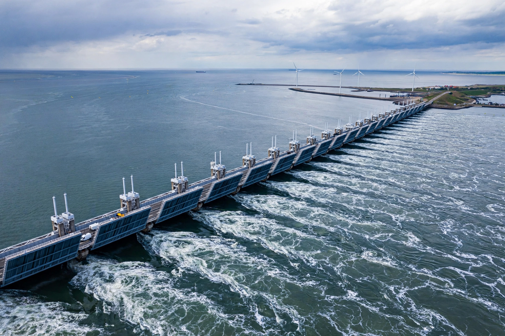

Climate change adaptation

Climate change adaptation is the process of adjusting to the actual and expected effects of Climate change — sea walls against rising seas, heat plans for cities, drought-tolerant crops, early-warning systems — in order to moderate harm or exploit beneficial opportunities. It complements Climate mitigation, which tackles causes.
Some adaptation is unavoidable: the climate is already changing, and more change is locked in. But adaptation has limits, which harden as warming increases.
Examples and success stories
The Netherlands' Delta Programme continually upgrades dikes and gives rivers room to flood safely; Bangladesh, by combining cyclone shelters, embankments and warnings, cut cyclone deaths from hundreds of thousands in 1970 to dozens in comparable recent storms. Cities plant trees and open cooling centres against heatwaves; farmers shift planting dates, varieties and irrigation; insurers and planners increasingly price climate risk into decisions.
Nature-based adaptation — restoring {L('Mangrove','mangroves')}, {L('Wetland','wetlands')} and urban green space — often protects coasts and cities while storing carbon and supporting wildlife.
Gaps and limits
Adaptation is chronically underfunded, especially in the poor countries least responsible for emissions; the UN estimates developing-country needs in the tens to hundreds of billions of dollars per year, many times current flows. Some changes exceed adaptation altogether: low coral atolls facing sea-level rise, glaciers whose meltwater communities depend on, and outdoor labour in lethal heat. Actions that protect one place by endangering another, or that lock in vulnerability, are classed as maladaptation.
Under the Paris Agreement countries file adaptation communications and national adaptation plans, and a global goal on adaptation frames the effort. See Sea level rise and Natural disaster.
See also: Climate change · Climate mitigation · Sea level rise · Paris Agreement · Natural disaster